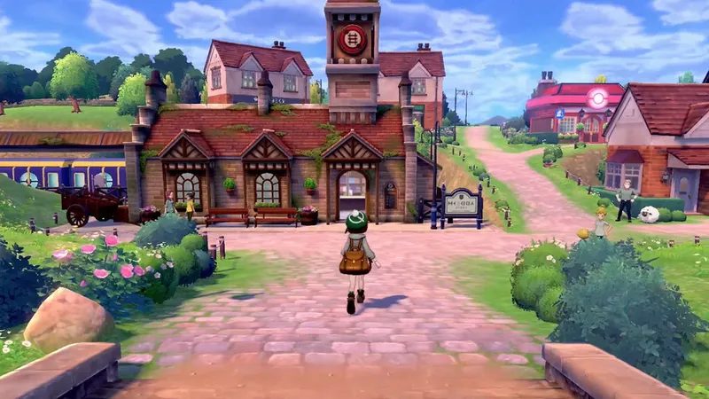
Pueblo Par
El pueblo donde empieza el viaje. Aquí viven el protagonista y Paul.
Generación 8 · Espada y Escudo
Galar se inspira en el Reino Unido. Tiene campos verdes, pueblos de piedra, ciudades industriales y estadios gigantes donde se celebran los combates. Aquí los combates Pokémon son un deporte: la gente los ve en los estadios y los entrenadores son como estrellas.
Pokémon Espada y Pokémon Escudo salieron en 2019 y trajeron 81 Pokémon nuevos, el Dinamax y la Zona Salvaje, una gran llanura donde se pueden capturar Pokémon. Después llegaron dos ampliaciones: La isla solitaria de la Armadura y Las nieves de la Corona.
El protagonista vive en Pueblo Par. Su amigo Paul le consigue una invitación del Campeón Lionel y los dos empiezan el Desafío de los gimnasios. Hay que conseguir ocho medallas, ganar la Copa de Campeones y, mientras tanto, descubrir un secreto que amenaza a toda Galar.


El pueblo donde empieza el viaje. Aquí viven el protagonista y Paul.
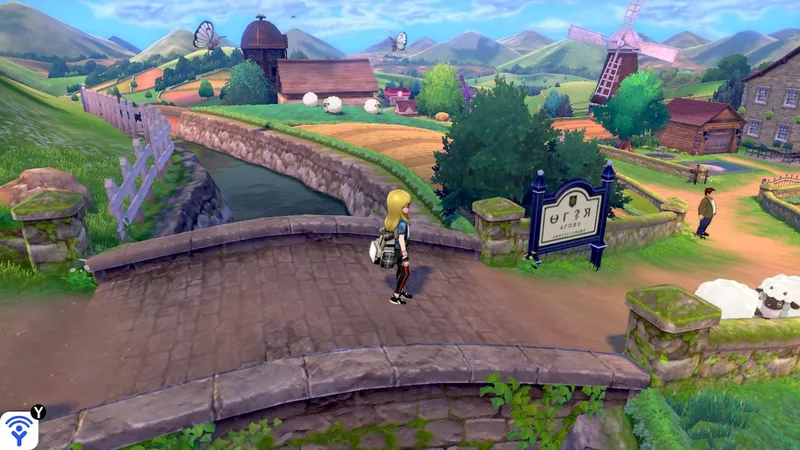
Un pueblo en el sur de Galar. Aquí el Campeón Lionel os da su primer Pokémon a Paul y a ti.
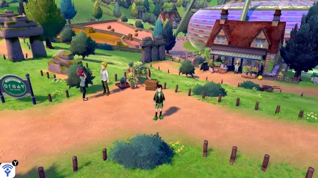
Un pueblo con campos y granjas, donde está el primer gimnasio.
Gimnasio: Planta
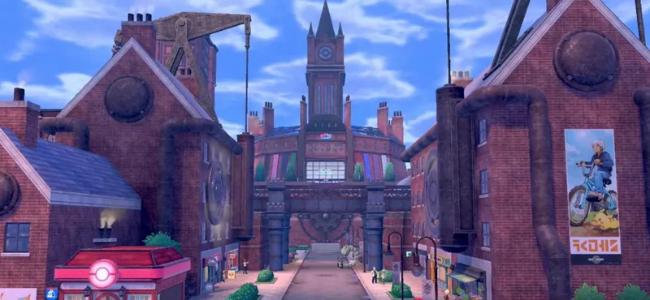
Una ciudad industrial, en el centro de Galar, con un estadio de gimnasio de tipo Fuego.
Gimnasio: Fuego
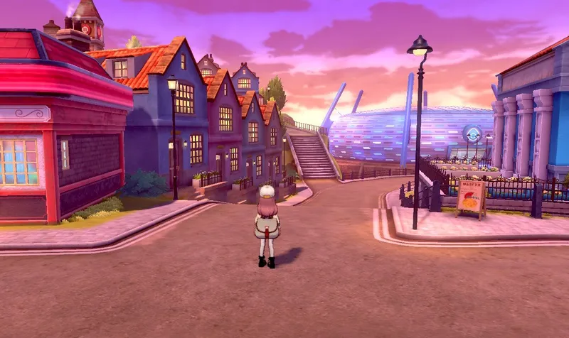
Un pueblo en la costa, con un puerto y una playa. Su gimnasio es de tipo Agua.
Gimnasio: Agua
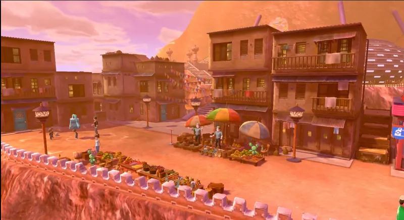
Un pueblo en el oeste de Galar, con calles empedradas. Tiene un gimnasio de Lucha o de Fantasma.
Gimnasio: Lucha Fantasma
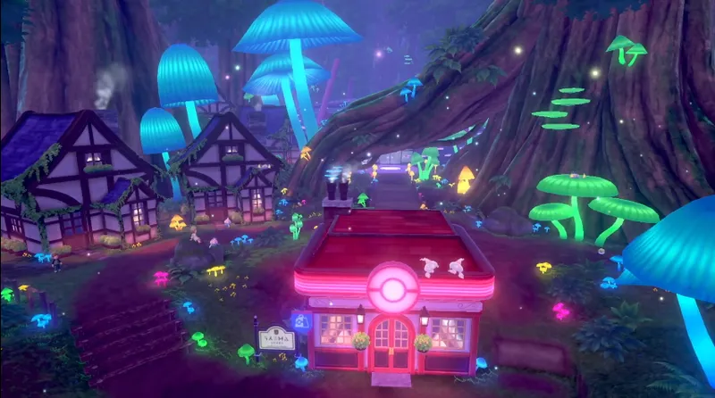
Un pueblo escondido en el Bosque Lumirinto. Su gimnasio es de tipo Hada.
Gimnasio: Hada
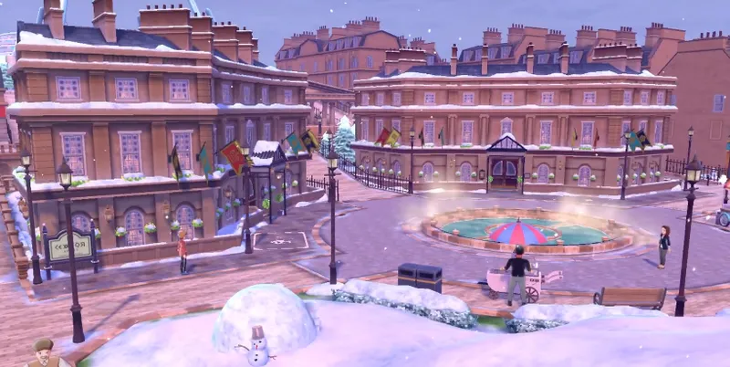
Un pueblo en el nordeste de Galar, con mucha nieve. Tiene un gimnasio de Roca o de Hielo.
Gimnasio: Roca Hielo
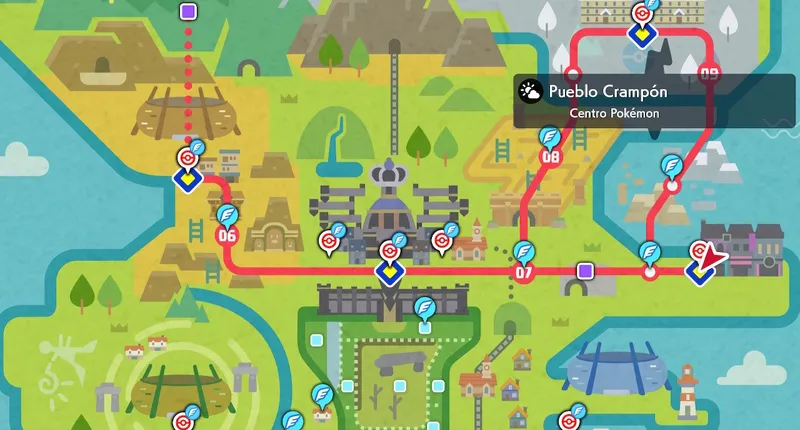
Un pueblo en el este de Galar, con un aire de ciudad gris. Su gimnasio es de tipo Siniestro.
Gimnasio: Siniestro
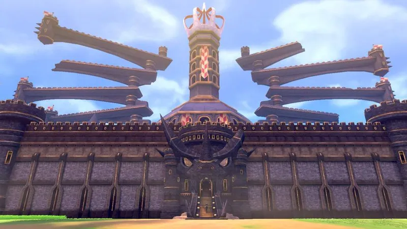
Una ciudad en el centro de Galar con un castillo antiguo. Su gimnasio es de tipo Dragón.
Gimnasio: Dragón
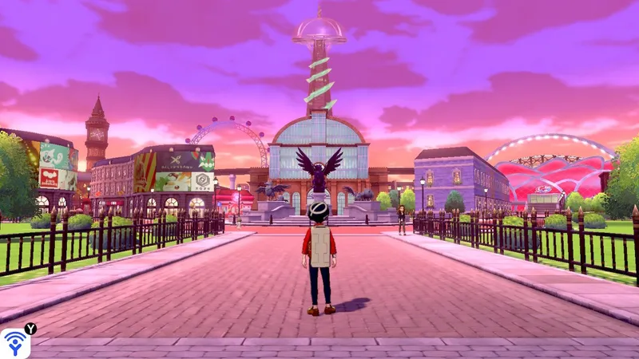
La capital de Galar, en el norte. Aquí está el estadio más grande de la región y la sede de la Copa de Campeones.
Aquí se celebra la Copa de Campeones
Pulsa en un Pokémon para verlo en grande.
Hada
El héroe legendario con espada. Es el legendario de Espada y aparece durante la historia.
Lucha
El héroe legendario con escudo. Es el legendario de Escudo y aparece durante la historia.
Veneno Dragón
Un Pokémon que llegó del espacio hace miles de años. Provoca el Dinamax en toda Galar.
Psíquico Planta
El Rey Corona, un Pokémon muy antiguo. Aparece en Las nieves de la Corona.
Hielo
El corcel de la Corona. Es un Pokémon muy rápido y lo monta Calyrex.
Fantasma
El corcel espectral de la Corona. Es un Pokémon muy rápido y lo monta Calyrex.
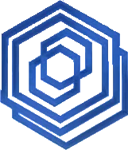
Macrocosmos es la empresa de energía más grande de Galar. Parece muy amable, pero su presidente, Rose, tiene un plan: usar a Eternatus para conseguir energía para siempre.
En la región también está el Equipo Yell, un grupo de fans de Mery que apoya a su ídolo y suele molestar a los entrenadores.
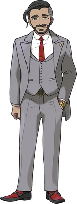
Presidente de Macrocosmos
El presidente de Macrocosmos y presidente de la Liga de Galar. Es un hombre muy amable, pero cree que hay que hacer cualquier cosa para salvar el futuro.
Los ocho gimnasios de Galar, en el orden normal del viaje. En Pueblo Ladera y en Pueblo Auriga hay dos líderes, y toca uno u otro según la versión: en Espada, Judith y Morris; en Escudo, Alistair y Mel.
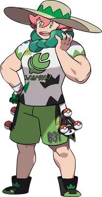
Pueblo Hoyuelo
Planta · Medalla Planta
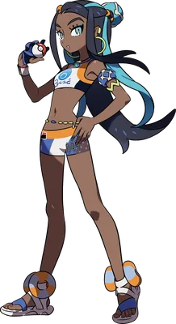
Pueblo Amura
Agua · Medalla Agua
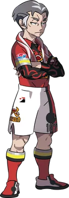
Ciudad Pistón
Fuego · Medalla Fuego
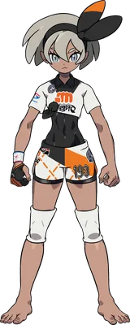
Pueblo Ladera
Lucha · Medalla Lucha
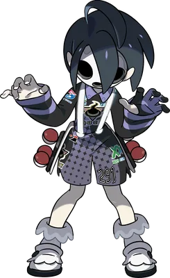
Pueblo Ladera
Fantasma · Medalla Fantasma
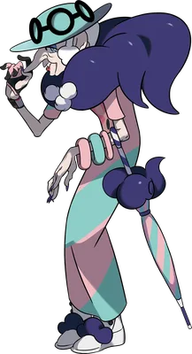
Pueblo Plié
Hada · Medalla Hada
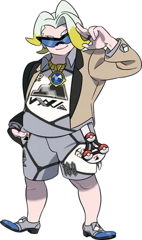
Pueblo Auriga
Roca · Medalla Roca
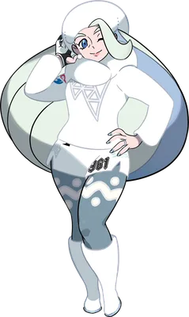
Pueblo Auriga
Hielo · Medalla Hielo
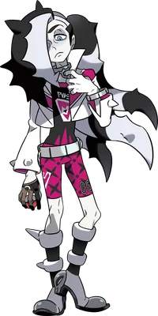
Pueblo Crampón
Siniestro · Medalla Siniestro
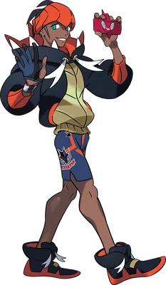
Ciudad Artejo
Dragón · Medalla Dragón
En Galar no hay Alto Mando. Para llegar al Campeón hay que ganar la Copa de Campeones, que se celebra en Ciudad Puntera, y vencer a los demás participantes.
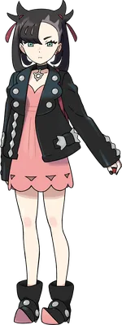
Rival de la Copa
Siniestro
La líder del Equipo Yell y rival en el desafío. Es muy fuerte y no se rinde.
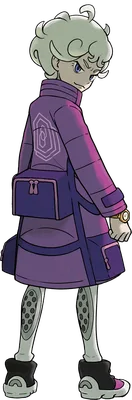
Rival de la Copa
Psíquico
Un entrenador de Pueblo Plié que acaba siendo líder de gimnasio. Es muy orgulloso.
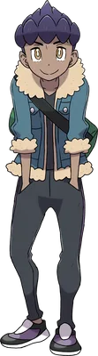
Rival de la Copa
Tu mejor amigo. Quiere ser campeón como su hermano Lionel.
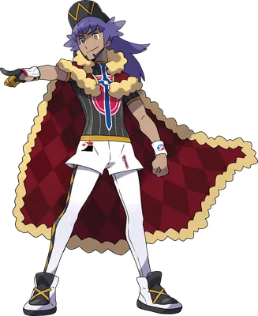
Campeón
El campeón de Galar. Es invencible y muy famoso, y tiene una capa roja.
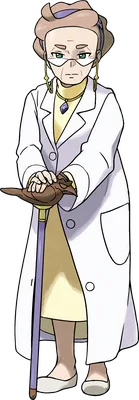
La experta en Dinamax. Es muy mayor, pero muy lista, y es la abuela de Sonia.
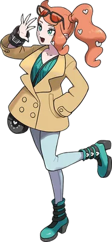
La nieta de la Profesora Magnolia. Investiga las leyendas de Galar y te ayuda en el viaje.
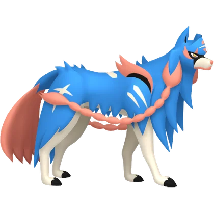
Zacian
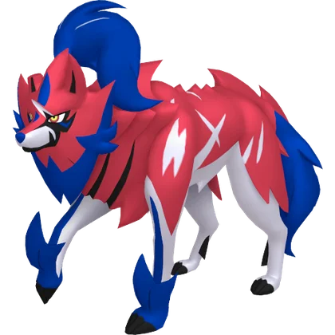
Zamazenta
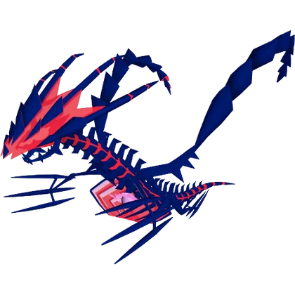
Eternatus
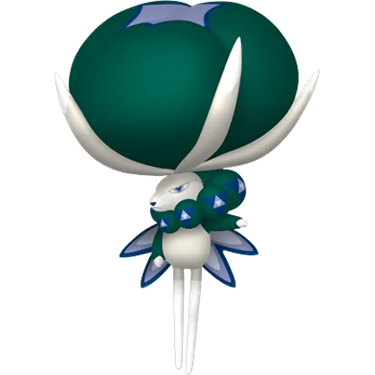
Calyrex
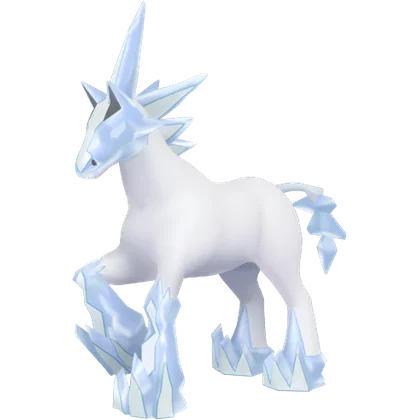
Glastrier
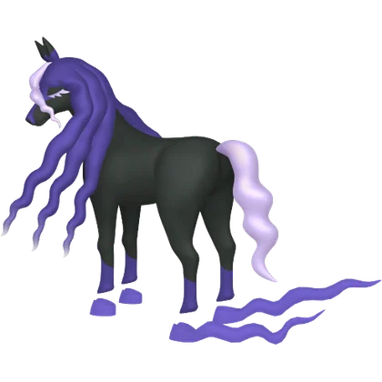
Spectrier
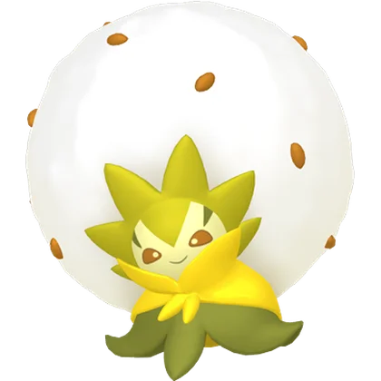
Eldegoss
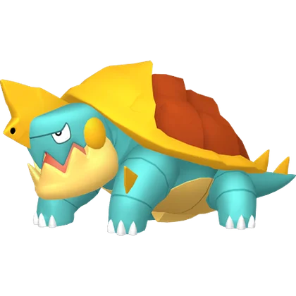
Drednaw
Centiskorch

Machamp

Gengar
Alcremie
Coalossal

Lapras
Obstagoon
Duraludon

Charizard